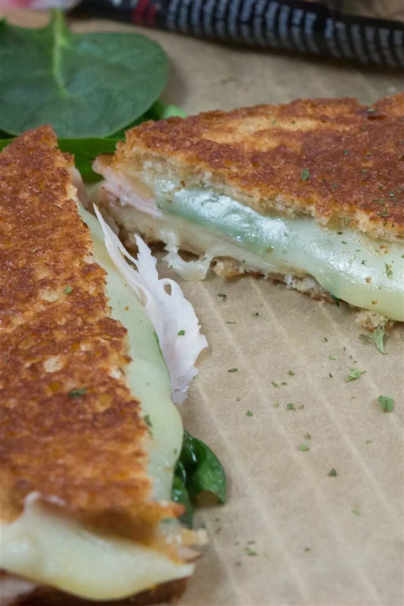

Ham and Grilled Cheese

Description
Look no further, your next protein packed sandwich has arrived! Great for breakfast or on the go.
This Easy Ham & Grilled Cheese recipe is absolutely delicious, quick, and you only need a few
ingredients to make it!
Ingredients (Serves 1)
- 2 Slices Bread
- 1-2 Teaspoons Mayonnaise - Per Slice (Reduced Fat Preferred)
- 3 Slices Cheese - Your Choice
- 1 Handful Spinach
- 2 Slices Deli Ham
Directions
- Coat one side of each piece of Bread with your Mayonnaise.
- On the non-mayonnaise side of one piece place 2 slices of Cheese, your Spinach, and your Ham.
- Put that into a stovetop pan (mayonnaise side down) and cook it on low heat for 2-3 minutes
or until your cheese starts to melt.
- Add your last slice of Cheese on top of your Ham and close it off with your other piece of Bread.
- Flip your sandwich onto the other mayonnaise side and continue cooking for another 2-3 minutes.
Nutrition Facts (Per Serving)
- 304 Calories
- 12g Fat
- 30g Carbs
- 19g Protein
Back to Top
Back to Homepage